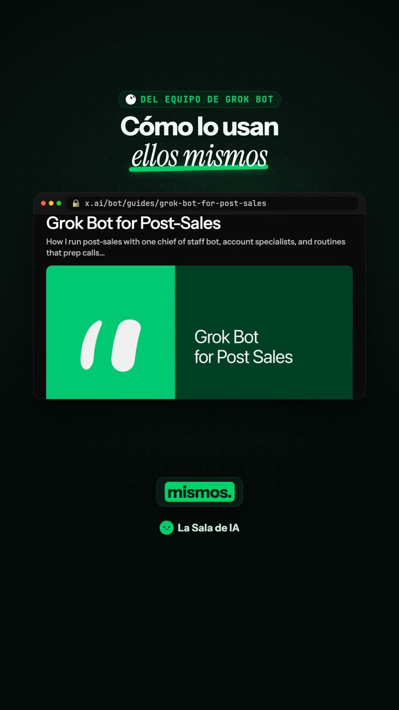
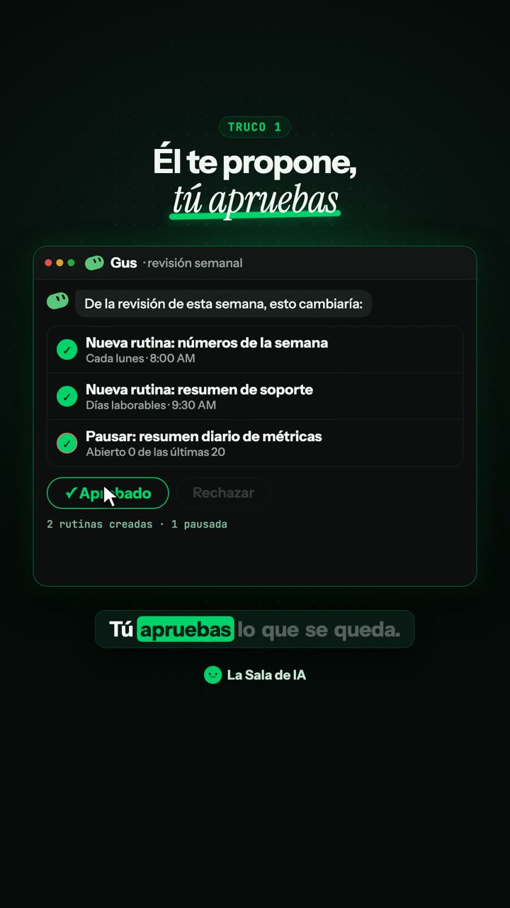
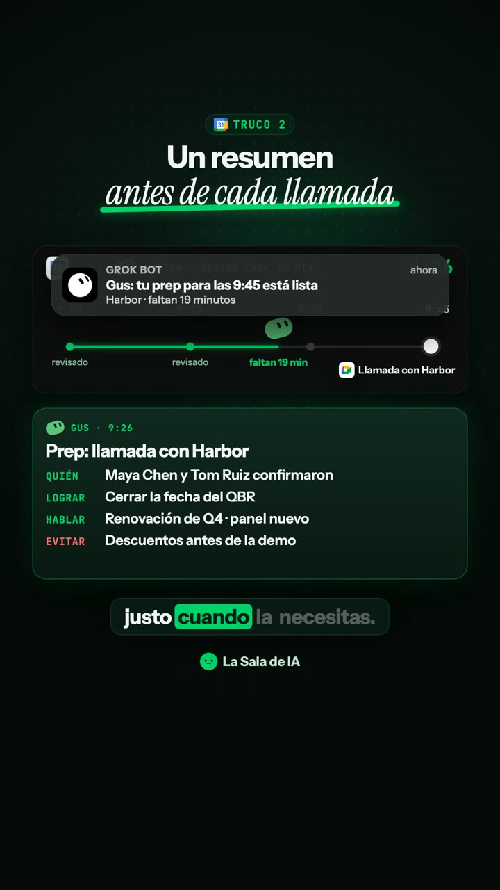
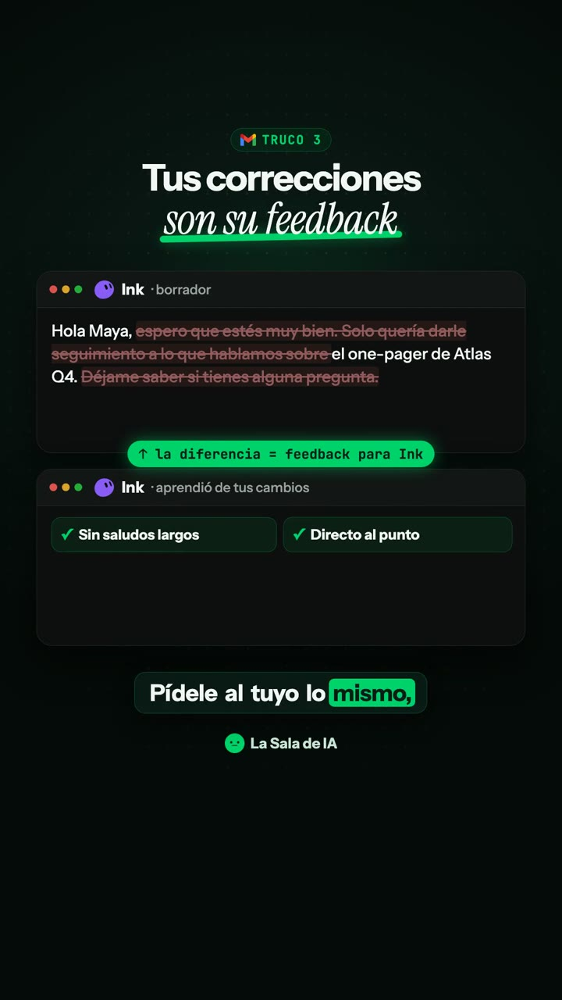
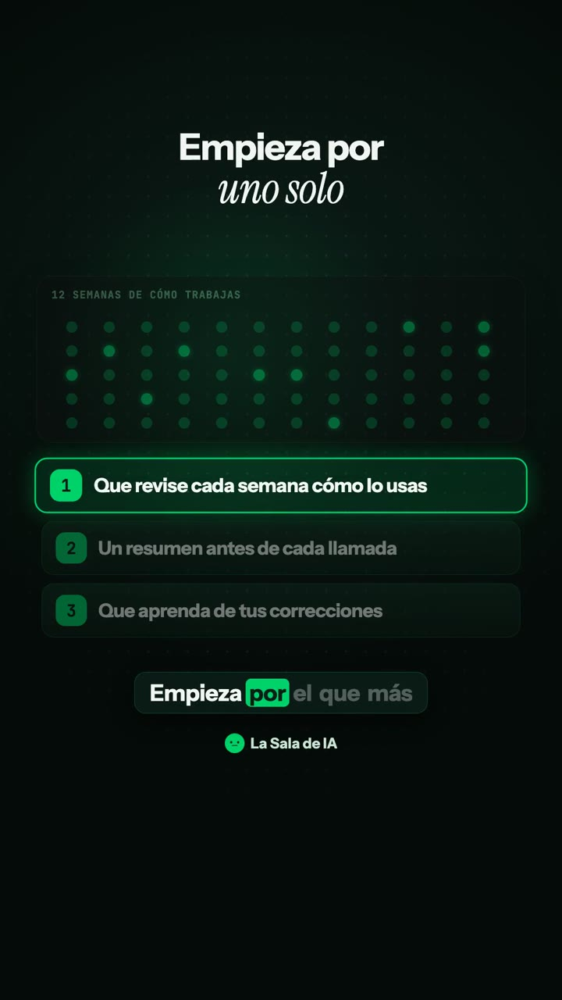

3 trucos de Grok Bot que usa su propio equipo
Una revisión semanal que mejora tus rutinas, un resumen antes de cada llamada y un bot que aprende de tus correcciones. Sale de la guía oficial de Grok Bot; aquí tienes cada rutina con su prompt listo para pegar.
Grok Bot te da agentes que trabajan dentro de tus apps, se acuerdan de tus instrucciones y siguen trabajando aunque cierres la laptop. En su guía para post-venta, el equipo de x.ai cuenta cómo lo usan: un bot jefe de equipo (Gus) que maneja a los demás, rutinas que corren solas y un bot de escritura (Ink) que aprende de lo que corriges. De ahí salen los 3 trucos del video. Los nombres de clientes del video (Maya Chen, Harbor, Atlas Q4) son ejemplos.
Herramientas
Grok Bot
Los agentes de xAI: app de escritorio e iOS, Slack y Teams, y entran a llamadas de Meet, Zoom y Teams.
Abrir Grok Bot →Guía «Grok Bot for Post-Sales»
La guía del equipo de Grok Bot de donde salen los 3 trucos (en inglés).
Leer la guía →La Sala de IA
Aquí probamos estas herramientas primero y te contamos lo que sí sirve.
Unirme a La Sala →01Arranca con un solo bot jefe
En la guía, la autora cuenta que intentó manejar 20 bots a la vez y fue un caos. Ahora habla con uno solo, Gus, que reparte el trabajo a los demás (seguimientos, escritura, preguntas de clientes…). Haz lo mismo: crea primero tu bot jefe. Ella empezó grabando un audio de 10 minutos contando su día: qué le gusta hacer, qué no y qué no quiere automatizar nunca.

Vas a ser mi jefe de equipo. Te llamas [NOMBRE]. Te cuento mi día de trabajo: [PEGA LA TRANSCRIPCIÓN DE TU AUDIO O ESCRIBE: qué hago cada día, qué herramientas uso, qué me quita más tiempo, qué me encanta hacer y qué NO quiero que automatices nunca]. Con eso: 1) dime qué 3 tareas repetidas te puedo pasar primero; 2) propón qué bots especialistas haría falta crear (uno por trabajo) y qué rutina tendría cada uno; 3) tú eres el único con el que hablo: los demás te reportan a ti y tú decides qué necesita mi atención. Antes de mandar nada con mi nombre, pídeme el sí.
02Truco 1: que revise cada semana cómo lo usas
Una rutina semanal donde el bot se audita a sí mismo: qué le pediste a mano tres veces (eso debería ser una rutina), qué avisos te manda que nunca abres (eso sobra) y qué falta. Él te propone los cambios y tú apruebas lo que se queda. En la guía corre los miércoles.

Crea una rutina que corra todos los [MIÉRCOLES] a las [9:00]. En ella revisa la última semana: 1. Qué te pedí a mano 3 veces o más → propón convertirlo en una rutina. 2. Qué rutinas o avisos corrieron y yo nunca abrí → propón pausarlos o cambiarlos. 3. Qué debería existir y todavía no existe. Mándame una lista corta con cada propuesta y un botón o respuesta de sí/no. No cambies nada hasta que yo apruebe.
03Truco 2: un resumen antes de cada llamada
Conéctalo a tu calendario. El bot revisa la agenda cada 15 minutos, pero solo escribe cuando falta entre 15 y 35 minutos para una llamada, así la ficha te llega justo a tiempo: quién confirmó, qué tienes que lograr, de qué hablar y qué evitar. Si no hay llamada, no te escribe nada.

Conéctate a mi calendario [GOOGLE CALENDAR / OUTLOOK]. Crea una rutina que revise mi agenda cada 15 minutos. Solo cuando una llamada empiece en 15 a 35 minutos, mándame una ficha corta: - Quién está invitado y quién confirmó de verdad. - La única cosa que tengo que lograr en esta llamada. - 3 temas para hablar, con links a los correos, notas o transcripciones donde salen. - Qué evitar (temas delicados, promesas que no puedo cumplir). Si no hay llamada en esa ventana, no me escribas nada. Mándamela por [SLACK / LA APP / CORREO].
04Truco 3: que aprenda de tus correcciones
En la guía, su bot de escritura (Ink) compara el borrador que hizo con el correo que de verdad se envió. Esa diferencia es su feedback: así aprende tu estilo sin que le expliques nada. Pídele al tuyo lo mismo.

Vas a escribir mis correos y mensajes. Cada vez que me dejes un borrador y yo lo envíe, compáralo con lo que de verdad mandé: qué quité, qué agregué, qué cambié de tono o de largo. Guarda esas diferencias en una nota que se llame "Mi estilo" (ej: "sin saludos largos", "máximo 40 palabras", "directo al punto") y úsala en el próximo borrador. Cada viernes enséñame qué aprendiste esta semana en 5 líneas. Nunca envíes nada sin mi sí.
05Empieza por uno solo
No montes los tres el mismo día. Escoge el que más trabajo repetido te quite (si tienes muchas llamadas, el truco 2; si escribes muchos correos, el 3). Con el tiempo el bot sabe mejor qué vale la pena automatizar, cuándo ayudarte y cómo escribes. La rutina semanal del truco 1 se encarga de ir sumando lo demás.

Mira mi calendario y mis correos de la última semana. Dime cuál de estos tres me ahorraría más tiempo y por qué, con números: 1) revisión semanal de cómo te uso, 2) ficha antes de cada llamada, 3) aprender de mis correcciones en los correos. Configura solo ese y dime cómo lo pauso si no me gusta.
Descargas
Kit de los 3 trucos
Los prompts de cada rutina listos para pegar en Grok Bot (bot jefe, revisión semanal, ficha antes de cada llamada y bot de escritura), una plantilla para tu audio del día y la nota «Mi estilo» para que el bot la vaya llenando.